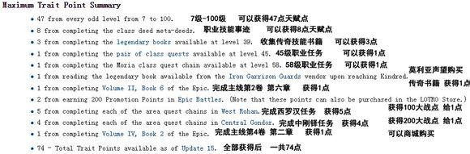

引子： 最近新人较多，写个帖子讲下游戏的大概流程，新人有不懂的可以在这里问，老玩家有好的建议也欢迎回复。如果有错的地方。。。请轻喷
第一部分：满级前
现在升级大概有3种途径。
1.做任务。最传统的方式，跟着任务指引一路做到满级。建议新人第一次玩就这么升级，虽然很慢，但能体验游戏，领略下各个地方的城市风貌和自然风光，看一看游戏剧情的发展，还能熟悉下自己的技能、特性等等。
2.刷本。任务做到60级，然后刷狼窝这个本，可以一直刷到满级。
3.坐飞机。这是最快捷的方式，能让你直接到95级，并且附赠一些装备，美德，地图等东西，95之后会传送到罗翰，接主线去刚铎做任务升级或者刷狼窝升级。完全不建议新人这么搞，就算你满级了你也什么都不懂，分分钟就让你失去游戏兴趣直至afk。
第二部分：满级后
满级后要做什么？ 永远绕不开的事就是刷美德= = 美德目前有19级，现在你要装的美德以抵抗（Resistance）为主，防御（Mitigation）和主属性（might或will或Agility，根据自己职业）为辅， https://lotro-wiki.com/index.php/Virtues 这网址是维基上美德的介绍和刷点（只要有点英语基础和游戏基础，就能看的懂）。
另外（大部分）可以自己刷的是天赋点。 目前一共82点，获取如下：
东钢铎奥斯吉力亚斯 任务清完获得第75点天赋点。
白城主线2点 完成白城3张图全部任务1点 ，事迹全部完成（击杀，探索，任务）又1点，79点。
最后是100-105级，自动给3点，82点。
现在大战刷的少，大战那两点有点难拿，还有白城的战团也需要组队。
附上维基的网址 http://lotro-wiki.com/index.php/traits
接下来是这版本新出的一些东西。
周常本。一周换一个副本，每天一个角色可以刷2次（100级和105级），都出周常奖励盒子，一个盒子可以固定开出5个周常币子（用于换做精华的图纸，在白城门口换取），随机开出105的新装备（2洞套）或水晶或升级卷轴或8级紫色精华，对于新手来说开出一些值钱的精华可以去拍卖行卖掉（因为你什么也没有，就不要想着做橙色精华了，还是赚点金币来的实际）。 周常本的T1都很简单，不用担心自己装备不好能不能打，如果看见频道有人叫就去吧，
除了周常本，新人也可以去刷oe（6人本），很简单的本。注意三点，在窗户边有光的地方打怪；最后台阶上的三个小boss在开boss之前不要打死；黄色的怪有火焰反伤。 这本是刷105的新首饰和105的新装备（2洞套）。看见有人叫，105 oe farm x/6，之类的就去混吧。 Ps，加入中国频道：/joinchannel china；/1（要空格）打字。想要加入别人的队，如果是老外你密他X，国人你打11就行。
另外，还有新3人bbs，新3人quay，新6人ss，T1模式都很简单，也是用来刷105装备（4洞套）和8级紫色精华的，新人要勇于去打。
对了，还有武器，我就不写了，不然要写一大堆，要了解的话直接翻吧里置顶的那个贴（新人多看置顶帖，全是精品贴）
如果各方面（美德，天赋点，装备，武器等）都提升的可以（多看看别人的装备）了，就可以去试试dos，rc这些t2c模式的本，用来刷osg套装和蘑菇币子（同周常币子，用于换做精华的图纸）。
Ps，关于属性，任何职业先要保证把自己的双防堆满（T额外多堆7k），然后暴击差不多堆满，策略根据自己职业堆，精通和血量平衡好，T还要适当堆些防爆和三维。
玩到这一步，你也差不多是个老手了，这版本就是刷，再更近一步提高装备等级，如果有条件了约上几个基友可以去试试bbs，quay和ss的t2c模式，尤其是ss的t2c是目前（不卡任何东西）最难的本。